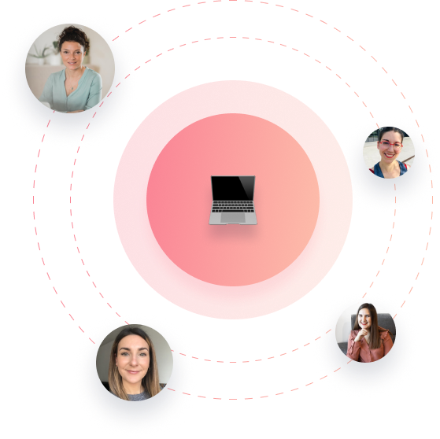

4 phrases à ne pas dire à une personne qui souffre de TCA
En savoir +
Un trouble du comportement
alimentaire se soigne.
Pas à pas, on avance avec toi.
Bienvenue chez StopTCA, une plateforme dédiée à la guérison des troubles alimentaires. Notre équipe pluridisciplinaire vous offre un accompagnement personnalisé et coordonné tout au long de votre parcours.
Vous ne savez pas par où commencer ? Réservez un appel gratuit de 15 minutes avec Céline, fondatrice de StopTCA.

5+
ans d’expériences
2500+
personnes accompagnées
400+
Rendez-vous par mois
Un accompagnement santé
pensé pour toi.
Pluridisciplinaire, humain et coordonné.
Une équipe d'experts réunie pour te proposer un suivi personnalisé et sans rupture. Chez StopTCA, nous croyons qu’on avance mieux ensemble.
Des experts réunis pour vous
Une approche collaborative pour un accompagnement vraiment efficace.
Un suivi 100 % personnalisé
Nos praticiens vous accompagnent à distance, selon votre rythme.
Une santé connectée
Vos professionnels sont toujours informés de votre situation, sans rupture.
Comment ça marche ?
3 étapes simples pour commencer
# Étape 1
Besoin d'aide ?
Réservez un appel gratuit
On vous oriente vers les bons spécialistes.
# Étape 2
Créez votre parcours personnalisé
Choisissez vos experts parmi nos psychologues, diététiciens, sophrologues…
# Étape 3
Commencez votre accompagnement
Nos spécialistes collaborent pour un suivi vraiment efficace.
Témoignages
Paroles vraies,
transformations vécues
Une qualité reconnue : noté 5★ par nos clients
"J'ai pu surmonter mes Tcas grâce à StopTCA"
Découvrez le témoignage de Florence
Céline CASSE
Mon engagement à aider les personnes confrontées aux troubles du comportement alimentaire découle de ma propre expérience. Ayant moi-même souffert de troubles alimentaires pendant 15 ans, je comprends profondément les montagnes russes émotionnelles et les obstacles rencontrés.
Ma lutte personnelle et mon observation des difficultés vécues par d'autres m'ont inspirée à créer StopTCA, une plateforme dédiée à offrir un accompagnement empathique et expert.
Mon engagement envers cette cause vient de mon cœur, et chaque jour, je travaille pour que personne ne se sente seul dans cette bataille. Si vous ou un proche êtes touchés par les TCA, je vous invite à rejoindre notre communauté bienveillante, où vous trouverez des soins personnalisés et un soutien réel.
Patiente Experte
Fondatrice
Nos Services
Vous avez besoin d'aide ?
Nous sommes la première et la seule plateforme de téléconsultation destinée à accompagner les patients souffrant de troubles du comportement alimentaire, et leurs proches.

Reprenez le pouvoir sur votre santé.
2500 personnes nous ont fait confiance pour changer leur vie. Et vous ?
Ils parlent de notre projet